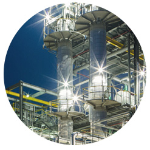
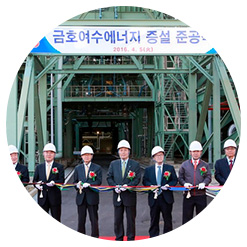
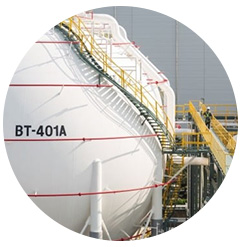

home > 회사소개 > 연혁
연혁
기업연혁
-
2010~현재
- 2016
- 08 ㈜강원학교태양광 지분 인수
- 07 여수제3에너지 준공
- 06 영광백수풍력발전㈜ 계열 편입
- 04 여수제2에너지 증설 준공
-
- 2015
- 상해금호일려소료유한공사 금산공장 준공 10
- 철도솔라㈜ 계열 편입 08
- 여수페트로㈜ 계열 편입 02
-
- 2013
- 12 탄소나노튜브 공장 상업생산 개시
- 10 탄소나노튜브 공장 준공
- 08 코리아에너지발전소㈜ 계열 편입
-
- 2012
- 금호석유화학그룹, 본사 이전(수표동 시그니처타워) 09
-
- 2011
- 12 30억불 수출의 탑 수상
- 03 예산 건자재공장 준공(건자재 사업)
- 02 여수고무제2공장 준공
- 
-
2009~2000
- 2009
- 금호티앤엘(주) 설립 09
- 광동금호일려고분자재료유한공사 설립 09
- 여수 제2열병합발전소 가동 06
-
- 2008
- 12 20억불 수출의 탑 수상
- 03 금호석화심양유한공사(XPS)설립
-
- 2007
- 미국 샬럿사무소 개소 07
- 중국 칭다오사무소 개소 06
- 일조금호금마화학유한공사 설립 06
-
- 2006
- 10 남경금포금호화공유한공사 설립
-
- 2005
- 10억불 수출의 탑 수상 11
- 금호개발상사 금호석유화학그룹 편입 11
-
- 2004
- 10 여수 SSBR 상업생산 개시
- 06 여수 NdBR 생산설비 신설
-
- 2003
- 여수 열병합발전소 가동 12
-
- 2002
- 12 중국 광저우사무소 개소
- 02 독일 프랑크푸르트사무소 개소
- 01 금호몬산토(주) 흡수합병 (정밀화학 사업)
-
- 2001
- 금호케미칼(주) 흡수합병 01
-
- 2000
- 10 상해금호일려소료유한공사 설립
-
1999~1990
- 1998
- 아산 전자화학공장 및 연구소 준공(전자소재 사업) 10
- 여수 SBS 생산시설 준공 04
-
- 1997
- 12 미국 샌디에이고사무소 개소
- 09 중국 상해사무소 개소
- 07 여수 열병합발전소 준공(에너지 사업)
- 05 미원유화, 금호케미칼(주)로 상호 변경(합성수지 사업)
- 
-
- 1994
- 열가소성 탄성체(SBS)개발 08
- 대전 금호석유화학연구소 완공 및 이전 04
-
- 1993
- 07 인도네시아 자카르타사무소(첫 해외사무소) 개소
-
- 1992
- 울산 BD 공장 가동 04
-
1989~1980
- 1989
- 10 울산 다목적 SBR-LATEX 공장 가동
- 03 금호미쓰이화학(주)설립
-
- 1988
- 여수 다목적 BR 공장 가동 11
-
- 1987
- 12 금호석유화학(주) 기업공개(IPO)
-
- 1985
- 금호폴리켐(주) 설립 06
- 금호석유화학연구소 설립 06
- 한국합성고무공업(주)와 금호화학(주) 합병, 금호석유화학(주)로 상호 변경 06
-
- 1983
- 12 울산 NBR 생산 개시
- 12 울산 SBR-LATEX 생산 개시
-
- 1982
- 울산 HSR 생산 개시 08
-
- 1980
- 06 여수 BR 공장 가동
-
1979~1970
- 1979
- 여수 BD 공장 가동 10
-
- 1976
- 12 금호피앤비화학(주)설립
-
- 1973
- 울산 SBR 공장 가동 12
-
- 1970
- 12 한국합성고무공업(주) 설립
- 
기업수상
-
본사수상
- 본사
- 2010.11 노사문화대상 / 고용노동부장관상
- 2009.09 사회복지의 날 서울특별시장 표창
- 2008.12 노사화합대상 / 대통령표창
-
중앙연구소 수상
- 중앙연구소
- 올해의 녹색기술-저탄소 중온 아스팔트 포장기술(LEADCAP) 2011.11
- 국가녹색기술대상/국토해양부장관상-저탄소 중온 아스팔트 포장기술 2011.11
-
울산고무공장 수상
- 울산고무공장
- 2013.11 자체소방대/장관상
- 2013.06 행복나눔인 포상 / 보건복지부 장관상
- 2008.11 대한민국안전대상/ 대통령상
- 2006.11 가스안전유공자 표창/ 울산광역시장상
- 2006.10 자연환경보전공로 표창/ 울산광역시장상
- 2004.06 국가환경경영대상/ 청정생산부문
- 2002.10 대한민국 안전대상/ 국무총리상
- 2000.12 안전경영대상
- 1996.12 무재해 동탑
- 1996.07 산업재해대상 우수사업장/ 대통령상
-
울산수지공장 수상
- 울산수지공장
- 전국녹색기업워크숍 녹색경영우수사례 발표대회 / 환경부 장관상 2010.07
- 울산산업대상(단체) / 지역사회 공헌부문 2007.10
- 가스안전 유공자상/ 울산광역시장상 2007.09
-
여수고무공장 수상
- 여수고무공장
- 2012.09 재난대응 응급처치 경연 전국대회/ 특별상
- 2010.06 무재해 11배 달성패
- 2008.06 국가환경경영대상/ 국무총리상
- 2007.06 환경친화우수기업
- 2006.12 전라남도 산업평화상 / 대상
- 2006.06 가스안전관리대상/ 국무총리상
- 2006.06 국가환경경영대상 최우수상/ 온실가스부문
- 2004.06 환경관리 유공기업
- 2004.06 국가환경친화경영대상 최우수상
- 2003.06 환경경영대상 대상/ 화학공업부문
- 2002.01 여수산단 안전관리 최우수업체